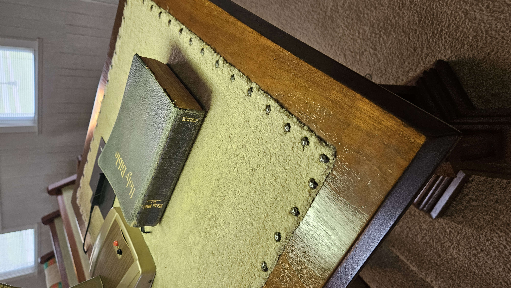
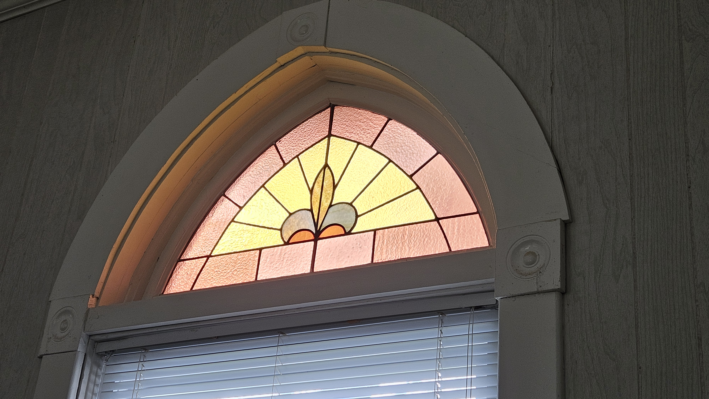

Welcome
We meet 1st Sunday of each month at 10:30 AM.
We rotate 5th Sunday meetings with Harmony Primitive Baptist Church, Matthews, Indiana.
The next 5th Sunday meeting will be with Mt. Carmel Church on Sunday, August 30, 2026.
Visitors Welcome

Historic Simplicity
We strive to follow the New Testament pattern of worship through prayer, preaching, and congregational a cappella singing.
Gathering together as families, we seek to worship God with simplicity, reverence, and a focus upon His word.
We welcome you to come and worship with us.

“For where two or three are gathered together in my name, there am I in the midst of them.”
— Matthew 18:20 (KJV)